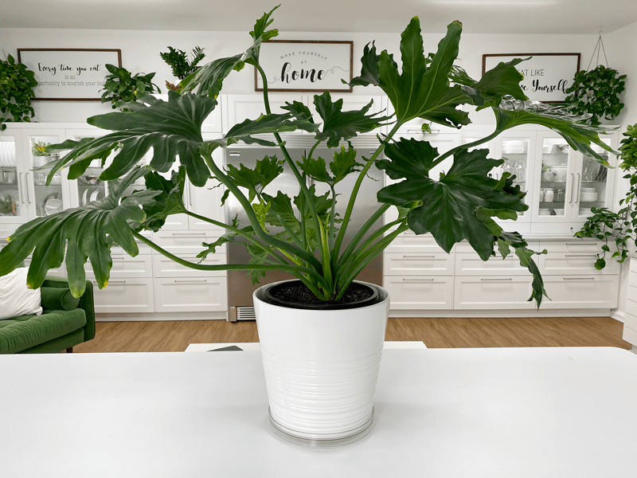
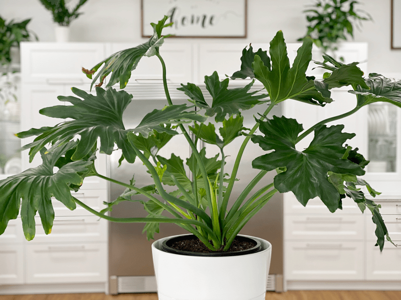
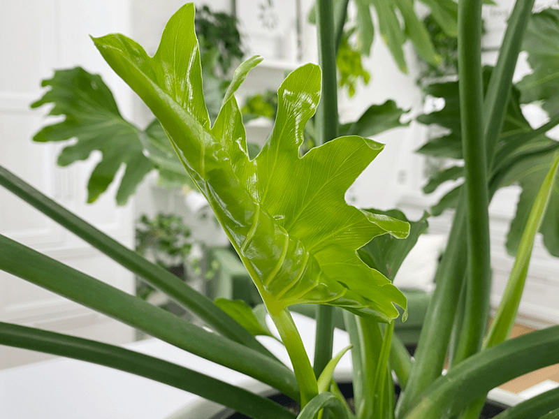
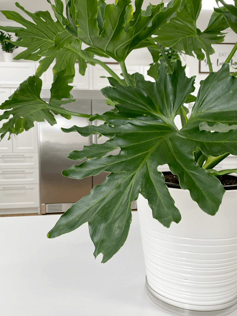

Philodendron Hope Selloum | Care Difficulty – Moderate
This incredible houseplant makes a huge impact. Its impressively large leaves are heart-shaped, medium green, and glossy with deep, wavy incisions along the edges. These jungle giants are not only beautiful, but also forgiving, adaptable, and low-maintenance. They are considered a floor plant, requiring adequate room due to size. Their canopy can grow 5 feet wide or more with 2-3 foot leaves.

As we decorate our homes with plants, we begin to become aware of our deep connection with nature and others. Plants require the same things as humans, to survive. These include sunlight, air to breathe, water to drink, as well as nourishment and love. If plants are ignored, they will wither away, just like humans. This is just one way in which plants begin to create healing, kindness, and new beginnings into our lives. So, if you don’t own any real plants (yet), give it some deep thought. Could you benefit from connecting to nature?
Decorating Tip
If you need to thin a plant or perhaps a stem fell off, you can place the cut leaves of the Philodendron Hope Selloum in a vase and continue to enjoy it for weeks, if not months. Be sure to change the water out once a week to extend the life of your living art.
Light Requirements
Place your Selloum in a spot where it will receive medium or bright indirect light, such as near a south- or north-facing window. This plant does not do well in low light spaces. Keep out of direct sunlight, to avoid burning the leaves. The Selloum tends to grow in the direction in which it is receiving light. I rotate my plant with every watering to make sure that it is getting even light and the stem doesn’t start to slant. I have a lazy Susan under the cover pot to make the rotation process much easier.
Water Requirements
Philodendrons prefer soil that is consistently lightly moist. They are sensitive to overwatering, so they don’t want to sit in soggy soil. Typically, you shouldn’t have to water your Hope Selloum more than once a week. Pour the water in the center of the plant to ensure that the rootball gets water. Then make sure you wet the soil from all directions. If the top 2 inches of the soil is dry, your plant could use a drink.
Here’s another great tip: Consider aerating the soil of your plant before the initial watering. Plants are usually shipped with compact soil to avoid shifting during transit. Therefore, aerating will help the soil breathe and allow moisture to be released. You can use a chopstick or similar to poke holes down into the soil.

Fertilizer – Plant Food
- In general, houseplants require fertilization during their growing season – spring through fall. A lot of plants go dormant in the winter, so hold off on feeding them during these months. You will need to monitor your plants year-round to determine whether or not they are growing. I live in the PNW and even though we get chilly winters and snow, my plants continue to grow so I feed them.
- Use diluted regular houseplant fertilizer once a month during the growing season of spring through early fall. Too much plant food causes an excess salt build-up in the soil that can result in leaf burn.
Temperature Requirements
- The ideal temperature for this plant is 60-75 degrees (F).
- Temperatures above and beyond this could cause the plant’s growth to slow down.
Repotting and Pruning
- For larger floor plants, it is suggested to repot the plant every 18-24 months.
- Choose a potting vessel 2”- 4” larger in diameter to allow for growth. Don’t choose a pot much larger than the previous, as this could drown the plant’s roots.
- If you prefer to maintain the current size of your plant, repot into the same vessel, providing new soil, and trimming away some roots and foliage.
- You can remove entire leaves by cutting them off at the base of the leaf stem. Wear gloves and wash your hands and tools when finished; you don’t want to get the sap in your eyes or mouth.
- Spring or summer is the ideal time to repot, as the plant is at its strongest.

Plant Characteristics to Watch For
Diagnosing what is going wrong with your plant is going to take a little detective work, but even more patience! First of all, don’t panic and don’t throw out a plant prematurely. Take a few deep breaths and work down the list of possible issues. Below, I am going to share some typical symptoms that can arise. When I start to spot troubling signs on a plant, I take it into a room with good lighting, pull out my magnifiers, and begin by thoroughly inspecting the plant.
My plant has more growth on one side than the other.
- The Hope Selloum’s long stems will bend toward sunlight.
- Solution: Rotate the plant frequently to keep it looking its fullest. Because these plants get big, I use a clear plastic lazy Susan under my plant so I can easily rotate it. See the photo below.
My plant is turning yellow.
- Yellowing of the leaves can be a sign of both over or underwatering. It will take a little detective work to figure which one might be the culprit.
There is a combination of yellow and brown leaves.
- A combination of yellow and brown on the same leaf is often due to overwatering.
- Solution: Remove or trim the damaged leaves and allow the plant to dry out and then adjust the watering schedule to avoid overwatering.
The yellow leaves have crispy brown edges.
- If this is the case, it could be a sign of underwatering.
- Solution: Remove or trim the damaged leaves and adjust the watering schedule to avoid underwatering. If you live in a warmer climate or when summer rolls around, you may find yourself watering your plants a bit more often. So don’t always stick to an exact watering schedule.
My plant is getting too big for my home.
- In the right conditions, this plant will grow quite large.
- Solution: Prune it back! These guys are very hardy and can handle a good trim.
The leaves have small dark-green blotches on the leaves.
- The leaves may be sick and eventually rot and die.
- Solution: The best way to prevent this sickness is to keep the leaves dry at all times and immediately remove any infected leaves.
The leaves are turning brown and curling at the tips.
- Too much salt in the soil may be the issue. Overfertilizing, or using water that has passed through a water softener, can cause this.
- Solution: Dilute your plant food to 1/2 the recommended strength and never use water for any houseplants that have passed through a water softener. Drench the soil with some distilled water and feed less often.
The leaves are turning pale green.
- The plant needs more fertilizer or if the plant is getting too much bright light.
- Solution: Check the feeding schedule and see if you need to adjust that. You can try moving the plant to an area where rays of the sun will not hit the leaves directly.
There are dark patches on the leaves.
- Diseases that can infect the Philodendron Selloum include bacterial blight, which results in very dark patches on the leaves and eventually causes the leaves to rot and die.
- Solution: Prevention is the best method of protection against this disease, which can be kept at bay by watering at soil level to keep the leaves dry.

Additional Care
- Remove any dead, discolored, damaged, or diseased leaves and stems as they occur.
- Wipe leaves with a damp cloth to keep them free of pests and dust. Never use a feather duster to clean plants, because dusters can quickly transfer tiny insects or eggs from one plant to another.
- If you want to grow your Hope Selloum vertically, use stakes to guide its growth upward instead of outward.
- The cut leaves of the Philodendron Hope Selloum can survive for months in a vase. Change the water out once a week, and place this beauty on any surface throughout your home.
Common Bugs to Watch For
If you want to have healthy houseplants, you MUST inspect them regularly. Every time I water a plant, I give it a quick look-over.
Bugs/insects feeding on your plants reduces the plant sap and redirects nutrients from leaves. Some chew on the leaves, leaving holes. Also watch for wilting or yellowing, distorted, or speckled leaves. They can quickly get out of hand and spread to your other plants.
IF you see ONE bug, trust me, there are more. So, take action right away. Some are brave enough to show their “faces” by hanging out on stems in plain sight. Others tend to hide out in the darnedest of places.
-

-
Mealybugs.
-

-
The plant is a pothos, but mealybugs can attack other plants.
- Mealybugs look like small balls of cotton. They can travel, slooooooowly, but they have a strong will and determination! Though they are slow-moving, if any plant is touching another, there is a chance the mealybug will hitch a ride on a new leaf and spread. They breed like rabbits of the insect world. Females can deposit around 600 eggs in loose cottony masses, often on the underside of leaves or along stems.
- Scales are dark-colored bumps that are primarily immobile insects that stick themselves to stems and leaves. They are rather inconspicuous and don’t look like a typical insect. They can range in color but are most often brownish in appearance. They’re called “scales” primarily due to their scale-like appearance on a plant, due to waxy or armored coverings. They are often seen in clumps along a stem, sucking away at the plant’s juices with their spiky mouthpart.
- Aphids are more commonly seen if you place your plants outdoors. Aphids are indeed bugs. They are tiny insects that, along with black, also come in shades of yellow, green, brown, and pink. They are often found on the undersides of leaves.
- Spider mites are more common on houseplants. They are not insects – they are related to spiders. These appear to be tiny black or red moving dots. Spider mites are nearly invisible to the naked eye. You often need a magnifying lens to spot them, or you may just notice a reddish film across the bottom of the leaves, some webbing, or even some leaf damage, which usually results in reddish-brown spots on the leaf.
Toxicity
Philodendron Hope Selloum is a very poisonous houseplant with a level #3 toxicity. It is not recommended to have pets around this plant.
© AmieSue.com